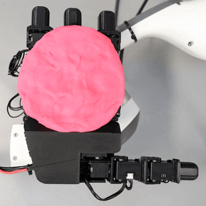
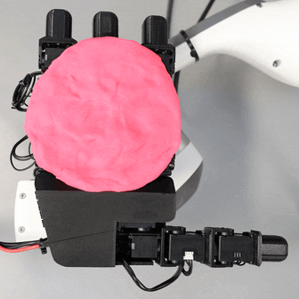

Mastering dexterous robotic manipulation of deformable objects is vital for overcoming the limitations of parallel grippers in real-world applications Current trajectory optimisation approaches often struggle to solve such tasks due to the large search space to be covered and the limited task information available from a cost function. In this work, we propose D-Cubed, a novel trajectory optimisation method using a latent diffusion model (LDM) trained from a task-agnostic play dataset to solve dexterous deformable object manipulation tasks. D-Cubed learns a skill-latent space that encodes short-horizon actions in the play dataset using a VAE and trains a LDM to compose the skill latents into a skill trajectory, representing a long-horizon action trajectory in the dataset. To optimise a trajectory for a target task, we introduce a novel gradient-free guided sampling method that adapts the Cross-Entropy method for the reverse diffusion process. In particular, D-Cubed samples a small number of noisy skill trajectories using the LDM for exploration and evaluates the trajectories in simulation. Then, D-Cubed selects the trajectory with the lowest cost for the subsequent reverse process. This effectively explores promising solution areas and optimises the sampled trajectories towards a target task throughout the reverse diffusion process. Through empirical evaluation on a public benchmark of dexterous deformable object manipulation tasks, we demonstrate that \ourmethod outperforms traditional trajectory optimisation and competitive baseline approaches by a significant margin. We further demonstrate that trajectories found by \ourmethod readily transfer to a real-world LEAP hand on a folding task.
We propose D-Cubed, Latent Diffusion for Trajectory Optimisation in Dexterous Deformable Manipulation. D-Cubed is a novel trajectory optimisation approach that leverages a latent diffusion model (LDM) trained on a task-agnostic play dataset of a robot hand that contains various representative hand motions, such as closing and opening the hand, and moving individual fingers.
(1) A VAE is trained to learn a skill latent representation by reconstructing a short-horizon action sequence randomly sampled from the task-agnostic play dataset. (2) A latent diffusion model (LDM) is trained to compose skills into a skill trajectory, representing a long-horizon action trajectory sampled from the dataset. The LDM, capable of generative diverse skill trajectories, effectively facilitates exploration in the large state space of dexterous deformable object manipulation tasks. (3) During trajectory optimisation, the LDM generates a small number of skill trajectories. These trajectories are evaluated in a simulator, and the best sequence, characterised by achieving the minimum cost, is selected for the subsequent reverse process.
The averaged normalised improved the Earth-Mover distance (EMD) and standard deviation is reported for each method.
Folding
Rope
Dumpling
Flip
Bun
Wrap
@article{yamada2024dcubed,
author = {Yamada, Jun and Zhong, Shaohong and Collins, Jack and Posner, Ingmar},
title = {D-Cubed: Latent DiffusioN Trajectory Optimisation for Dexterous Deformable Manipulation},
journal={arXiv preprint arXiv:2403.12861},
year = {2024},
}